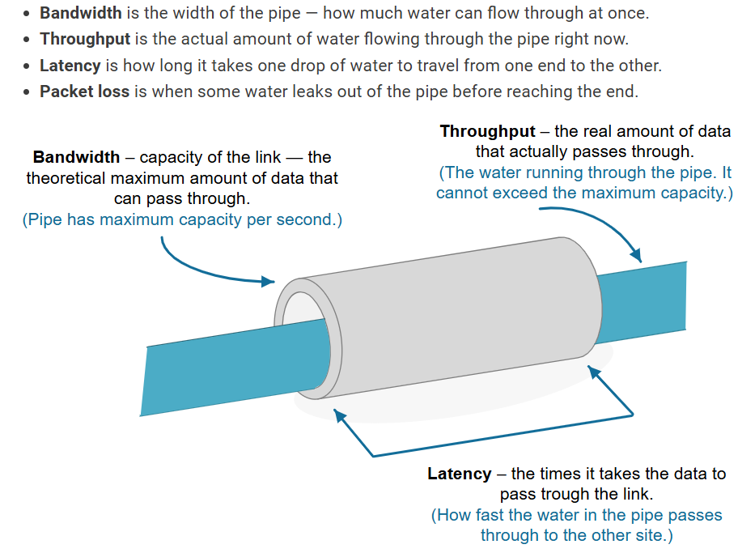
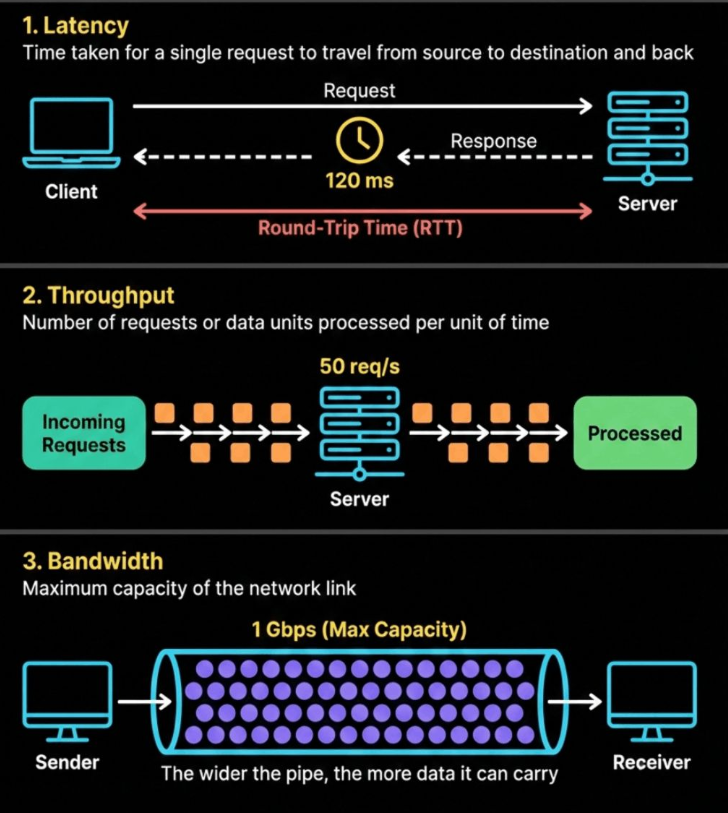

System Design Mastery
Master scalable systems with premium insights
⚡ Latency vs Throughput: Understanding Performance Metrics
1️⃣ What is Latency?
Latency = how fast one request gets a response
Latency is the time taken to process a single request.
👉 Time taken from request → response
- Click button → page loads in 200 ms (good ✅)
- Click button → loads in 5 seconds (bad ❌)
Key Takeaway:
- 🎯 Lower latency = better user experience
- 💨 Latency is about speed, not capacity
- 📌 One line: Latency is the delay for a single request
2️⃣ What is Throughput?
Throughput = number of requests a system can handle per unit time
👉 Throughput is measured in Requests per second (RPS)
- Can handle 1,000 requests/second (high throughput ✅)
- Can handle 10 requests/second (low throughput ❌)
Key Takeaway:
- 📦 Throughput is about Capacity
- 🎯 One line: Throughput is how much work the system can do

📊Latency vs Throughput vs Bandwidth
3️⃣ Latency vs Throughput (Must Know)
⏱️ Latency
Speed
How fast one request is processed
📦 Throughput
Capacity
How many requests can be handled

📊Latency vs Throughput vs Bandwidth
4️⃣ Why Do These Concepts Exist?
These concepts exist to measure system performance.
- 😊 Latency tells you user experience
- ⚖️ Throughput tells you system capacity
5️⃣ What Breaks Without Understanding Them?
❌ If you ignore latency:
- 🐌 App feels slow
- 😢 Users leave
❌ If you ignore throughput:
- 💥 System crashes under load
- ⚠️ Can't handle traffic
6️⃣ One Common Mistake
🚨 Optimizing One While Ignoring the Other
- ⚡ Making APIs fast but unable to handle traffic
- 🚚 Handling huge traffic but responses are slow
👉 Always balance both.
7️⃣ Real App Connections
🛒 E-commerce
- ⚡ Latency: Fast product search
- 📦 Throughput: Handle sale traffic
💬 Chat App
- ⚡ Latency: Instant message delivery
- 📦 Throughput: Many messages per second
🎬 Streaming App
- ⚡ Latency: Fast video start
- 📦 Throughput: Many users streaming
🎯 Summary
Latency measures how fast a single request is processed, while throughput measures how many requests a system can handle over time. A good system balances both: fast responses AND high capacity. Ignoring either one will hurt your application — whether through slow user experience or inability to scale.
💡 Pro Tip
You can't optimize for one without considering the other. Reducing latency might require caching (which could reduce throughput if not configured right). Increasing throughput might require load balancers and multiple servers (which can increase latency if not optimized).
Measure both metrics in production. Use tools like APM (Application Performance Monitoring), load testing, and real user monitoring (RUM) to understand your actual latency and throughput. Design your system to handle your expected peak load while maintaining acceptable latency levels.